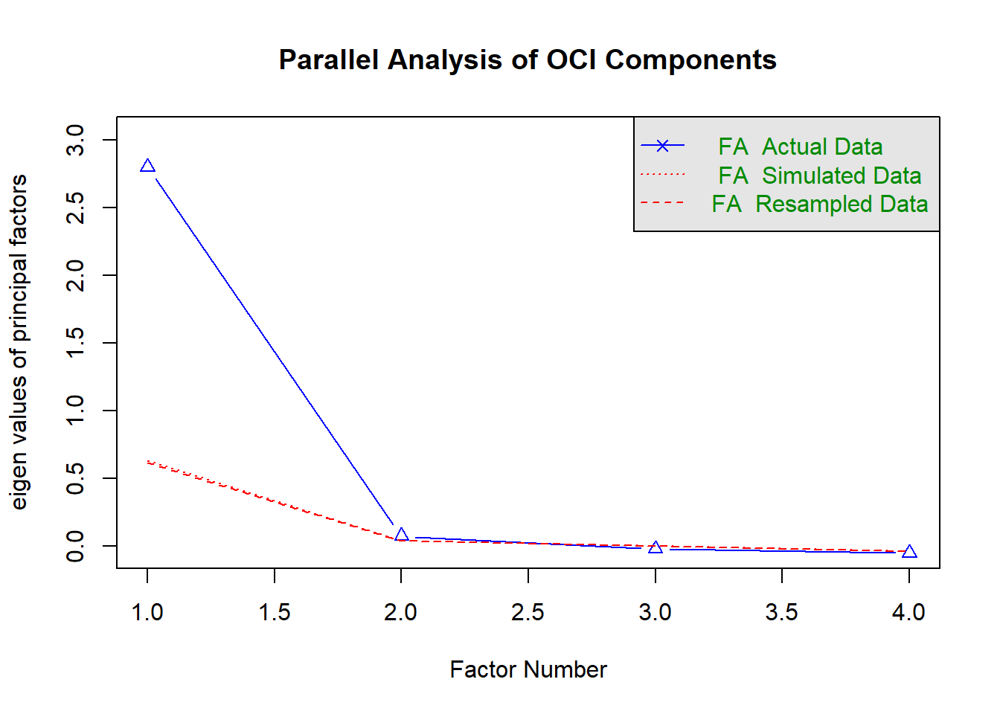

# ============================================================
# FACTOR-ANALYSIS DIAGNOSTICS FOR OCI COMPONENTS
# ============================================================
# Install these packages once if necessary:
# install.packages(c("readxl", "dplyr", "psych", "GPArotation"))
library(readxl)
library(dplyr)
library(psych)
library(GPArotation)
# ============================================================
# 1. Specify the data-file location
# ============================================================
file_path <- paste0(
"D:/PhD in Political Science-UTD/Fall 2026/",
"Methods of Data Collection and Production/",
"avinash13808138.github.io/",
"GTD-India_Avinash_with_Districts_and_OCI_",
"MatchedData_with_Controls_Final 2(2).xlsx"
)
# ============================================================
# 2. Confirm that R can locate the data file
# ============================================================
if (!file.exists(file_path)) {
stop(
paste(
"The Excel file was not found at:",
file_path,
"\nCurrent working directory:",
getwd()
)
)
}
print("The Excel file was found successfully.")[1] "The Excel file was found successfully."# ============================================================
# 3. Import the Excel data
# ============================================================
gtd_data <- read_excel(
path = file_path,
sheet = "Sheet1"
)
print(dim(gtd_data))[1] 13929 159# Expected:
# 13,929 rows and 159 columns
# ============================================================
# 4. Reproduce the Model 2 analytical sample
# ============================================================
model2_incidents <- gtd_data %>%
filter(
ideology_code %in% c(1, 2, 3),
!is.na(OCI),
!is.na(lagged_district_terrorism_intensity)
)
cat(
"\nNumber of Model 2 incidents:",
nrow(model2_incidents),
"\n"
)
Number of Model 2 incidents: 7631 cat(
"Number of organizations:",
n_distinct(model2_incidents$gname),
"\n"
)Number of organizations: 115 # Expected:
# 7,631 incidents
# 115 organizations
# ============================================================
# 5. Create one observation per organization-year
# ============================================================
oci_group_year <- model2_incidents %>%
distinct(
gname,
iyear,
.keep_all = TRUE
)
cat(
"Number of unique organization-years:",
nrow(oci_group_year),
"\n"
)Number of unique organization-years: 572 # Expected:
# 572 organization-years
# ============================================================
# 6. Confirm that organization-years are unique
# ============================================================
duplicate_group_years <- oci_group_year %>%
count(gname, iyear) %>%
filter(n > 1)
if (nrow(duplicate_group_years) == 0) {
print("No duplicate organization-years were found.")
} else {
print("Warning: Duplicate organization-years were found.")
print(duplicate_group_years)
}[1] "No duplicate organization-years were found."# ============================================================
# 7. Select the four standardized OCI components
# ============================================================
oci_components <- oci_group_year %>%
select(
z_prior_attacks,
z_tactical_diversity,
z_geo_spread,
z_success_rate
)
# ============================================================
# 8. Check for missing component values
# ============================================================
print("Missing values in the OCI components:")[1] "Missing values in the OCI components:"print(
colSums(is.na(oci_components))
) z_prior_attacks z_tactical_diversity z_geo_spread
0 0 0
z_success_rate
0 # All results should be zero.
# Remove incomplete rows if any are present
oci_components_complete <- oci_components %>%
filter(complete.cases(.))
cat(
"Complete organization-years used in factor analysis:",
nrow(oci_components_complete),
"\n"
)Complete organization-years used in factor analysis: 572 # ============================================================
# 9. Summary statistics
# ============================================================
print("Summary statistics:")[1] "Summary statistics:"print(
summary(oci_components_complete)
) z_prior_attacks z_tactical_diversity z_geo_spread z_success_rate
Min. :-1.13477 Min. :-1.30407 Min. :-1.00393 Min. :-3.67558
1st Qu.:-0.86307 1st Qu.:-1.30407 1st Qu.:-0.62641 1st Qu.:-0.40605
Median :-0.20581 Median : 0.06590 Median :-0.15078 Median : 0.24786
Mean :-0.06825 Mean :-0.01125 Mean :-0.08744 Mean : 0.02447
3rd Qu.: 0.44090 3rd Qu.: 0.79969 3rd Qu.: 0.39651 3rd Qu.: 0.82753
Max. : 3.18561 Max. : 2.10980 Max. : 2.77675 Max. : 1.40029 # ============================================================
# 10. Correlation matrix
# ============================================================
oci_correlations <- cor(
oci_components_complete,
use = "complete.obs"
)
print("Correlation matrix:")[1] "Correlation matrix:"print(
round(oci_correlations, 3)
) z_prior_attacks z_tactical_diversity z_geo_spread
z_prior_attacks 1.000 0.719 0.931
z_tactical_diversity 0.719 1.000 0.718
z_geo_spread 0.931 0.718 1.000
z_success_rate 0.587 0.531 0.567
z_success_rate
z_prior_attacks 0.587
z_tactical_diversity 0.531
z_geo_spread 0.567
z_success_rate 1.000# ============================================================
# 11. KMO test
# ============================================================
kmo_results <- KMO(oci_correlations)
print("KMO results:")[1] "KMO results:"print(kmo_results)Kaiser-Meyer-Olkin factor adequacy
Call: KMO(r = oci_correlations)
Overall MSA = 0.77
MSA for each item =
z_prior_attacks z_tactical_diversity z_geo_spread
0.69 0.93 0.70
z_success_rate
0.94 cat(
"\nOverall KMO:",
round(kmo_results$MSA, 3),
"\n"
)
Overall KMO: 0.775 print("Individual KMO values:")[1] "Individual KMO values:"print(
round(kmo_results$MSAi, 3)
) z_prior_attacks z_tactical_diversity z_geo_spread
0.695 0.933 0.697
z_success_rate
0.939 # ============================================================
# 12. Bartlett's test of sphericity
# ============================================================
bartlett_results <- cortest.bartlett(
R = oci_correlations,
n = nrow(oci_components_complete)
)
print("Bartlett's test results:")[1] "Bartlett's test results:"print(bartlett_results)$chisq
[1] 1843.688
$p.value
[1] 0
$df
[1] 6# ============================================================
# 13. Eigenvalues
# ============================================================
eigen_results <- eigen(oci_correlations)
print("Eigenvalues:")[1] "Eigenvalues:"print(
round(eigen_results$values, 3)
)[1] 3.046 0.537 0.348 0.069first_dimension_variance <-
eigen_results$values[1] /
sum(eigen_results$values)
cat(
"\nProportion of total variance associated with first dimension:",
round(first_dimension_variance, 3),
"\n"
)
Proportion of total variance associated with first dimension: 0.762 # ============================================================
# 14. Parallel analysis
# ============================================================
set.seed(12345)
parallel_results <- fa.parallel(
oci_components_complete,
fa = "fa",
fm = "minres",
n.iter = 1000,
plot = TRUE,
main = "Parallel Analysis of OCI Components"
)
Parallel analysis suggests that the number of factors = 1 and the number of components = NA # ============================================================
# 15. Estimate a one-factor model
# ============================================================
one_factor_model <- fa(
oci_components_complete,
nfactors = 1,
fm = "minres",
rotate = "none"
)
print("One-factor model:")[1] "One-factor model:"print(
one_factor_model,
digits = 3,
cutoff = 0.20,
sort = FALSE
)Factor Analysis using method = minres
Call: fa(r = oci_components_complete, nfactors = 1, rotate = "none",
fm = "minres")
Standardized loadings (pattern matrix) based upon correlation matrix
MR1 h2 u2 com
z_prior_attacks 0.958 0.918 0.0821 1
z_tactical_diversity 0.771 0.595 0.4048 1
z_geo_spread 0.945 0.893 0.1071 1
z_success_rate 0.627 0.393 0.6073 1
MR1
SS loadings 2.799
Proportion Var 0.700
Mean item complexity = 1
Test of the hypothesis that 1 factor is sufficient.
df null model = 6 with the objective function = 3.241 0.2 with Chi Square = 1843.688
df of the model are 2 and the objective function was 0.074
0.2
The root mean square of the residuals (RMSR) is 0.027
The df corrected root mean square of the residuals is 0.047
0.2
The harmonic n.obs is 572 with the empirical chi square 2.474 with prob < 0.29
0.2The total n.obs was 572 with Likelihood Chi Square = 41.933 with prob < 7.84e-10
0.2
Tucker Lewis Index of factoring reliability = 0.9347
RMSEA index = 0.1868 and the 90 % confidence intervals are 0.1403 0.2382 0.2
BIC = 29.235
Fit based upon off diagonal values = 0.998
Measures of factor score adequacy
MR1
Correlation of (regression) scores with factors 0.978
Multiple R square of scores with factors 0.956
Minimum correlation of possible factor scores 0.912# ============================================================
# 16. Extract factor loadings
# ============================================================
factor_loadings <- data.frame(
component = rownames(
unclass(one_factor_model$loadings)
),
loading = as.numeric(
unclass(one_factor_model$loadings)[, 1]
),
row.names = NULL
)
print("Factor loadings:")[1] "Factor loadings:"print(factor_loadings) component loading
1 z_prior_attacks 0.9580816
2 z_tactical_diversity 0.7714709
3 z_geo_spread 0.9449469
4 z_success_rate 0.6266361# ============================================================
# 17. Extract communalities and uniqueness values
# ============================================================
factor_quality <- data.frame(
component = names(one_factor_model$communality),
communality = as.numeric(
one_factor_model$communality
),
uniqueness = as.numeric(
one_factor_model$uniquenesses
),
row.names = NULL
)
print("Communalities and uniqueness values:")[1] "Communalities and uniqueness values:"print(factor_quality) component communality uniqueness
1 z_prior_attacks 0.9179204 0.08207962
2 z_tactical_diversity 0.5951674 0.40483263
3 z_geo_spread 0.8929247 0.10707527
4 z_success_rate 0.3926728 0.60732721# ============================================================
# 18. Display model-fit information
# ============================================================
print("RMSEA:")[1] "RMSEA:"print(one_factor_model$RMSEA) RMSEA lower upper confidence
0.1868246 0.1402744 0.2382436 0.9000000 print("Tucker-Lewis Index:")[1] "Tucker-Lewis Index:"print(one_factor_model$TLI)[1] 0.9347332print("RMSR:")[1] "RMSR:"print(one_factor_model$rms)[1] 0.02685138# ============================================================
# 19. Final diagnostic tables
# ============================================================
print("Final factor-loading table:")[1] "Final factor-loading table:"print(
factor_loadings %>%
mutate(
loading = round(loading, 3)
)
) component loading
1 z_prior_attacks 0.958
2 z_tactical_diversity 0.771
3 z_geo_spread 0.945
4 z_success_rate 0.627print("Final factor-quality table:")[1] "Final factor-quality table:"print(
factor_quality %>%
mutate(
communality = round(communality, 3),
uniqueness = round(uniqueness, 3)
)
) component communality uniqueness
1 z_prior_attacks 0.918 0.082
2 z_tactical_diversity 0.595 0.405
3 z_geo_spread 0.893 0.107
4 z_success_rate 0.393 0.607